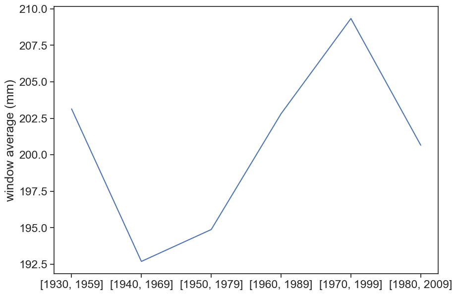

You might need to exclude the first or the last line, since their data might have less that 12 months. For example:
Show/hide the code
# exclude 1st rowdf_year = df_year_all.iloc[1:]# exclude last rowdf_year = df_year_all.iloc[:-1]# exclude both 1st and last rowsdf_year = df_year_all.iloc[1:-1]df_year
rain (mm)
DATE
1923-09-30
144.5
1924-09-30
130.4
1925-09-30
165.3
1926-09-30
188.7
1927-09-30
130.2
...
...
2011-09-30
151.6
2012-09-30
145.7
2013-09-30
175.3
2014-09-30
259.2
2015-09-30
249.3
93 rows × 1 columns
Calculate the average annual rainfall. Plot annual rainfall for the whole range, together with the average. You should get something like this:
Plot a histogram of annual rainfall, with the mean and standard deviation. Calculate the coefficient of variation. Try to plot something like this:
Show/hide the code
fig, ax = plt.subplots(figsize=(10,7))# calculate mean and standard deviationrain_mean = df_year['rain (mm)'].mean()rain_std = df_year['rain (mm)'].std()# plot histogramb = np.arange(0, 401, 50) # bins from 0 to 400, width = 50ax.hist(df_year['rain (mm)'], bins=b)# plot vertical lines with mean, std, etcylim = np.array(ax.get_ylim())ylim[1] = ylim[1]*1.1ax.plot([rain_mean]*2, ylim, linewidth=3, color="tab:orange")ax.plot([rain_mean+rain_std]*2, ylim, linewidth=3, linestyle="--", color="tab:olive")ax.plot([rain_mean-rain_std]*2, ylim, linewidth=3, linestyle="--", color="tab:olive")ax.set(ylim=ylim, xlabel="annual rainfall (mm)", ylabel="number of years", title=f"Beer Sheva, 1922–2016. Mean={rain_mean:.0f} mm, STD={rain_std:.0f} mm")ax.text(300, 25, f"CV = {rain_std/rain_mean:.2f}")plt.savefig("histogram_beersheva.png")
Calculate the mean annual rainfall for various 30-year intervals
Show/hide the code
####### the hard way ######## fig, ax = plt.subplots(figsize=(10,7))# mean_30_59 = df_year.loc['1930-09-30':'1959-09-01','rain (mm)'].mean()# mean_40_69 = df_year.loc['1940-09-30':'1969-09-01','rain (mm)'].mean()# mean_50_79 = df_year.loc['1950-09-30':'1979-09-01','rain (mm)'].mean()# mean_60_89 = df_year.loc['1960-09-30':'1989-09-01','rain (mm)'].mean()# mean_70_99 = df_year.loc['1970-09-30':'1999-09-01','rain (mm)'].mean()# mean_80_09 = df_year.loc['1980-09-30':'2009-09-01','rain (mm)'].mean()# ax.plot([mean_30_59,# mean_40_69,# mean_50_79,# mean_60_89,# mean_70_99,# mean_80_09])####### the easy way #######fig, ax = plt.subplots(figsize=(10,7))# use list comprehensionwindows = [[x, x+29] for x in [1930,1940,1950,1960,1970,1980]]mean = [df_year.loc[f'{w[0]:d}-09-30':f'{w[1]:d}-09-01','rain (mm)'].mean() for w in windows]ax.plot(mean)ax.set(xticks=np.arange(len(mean)), xticklabels=[str(w) for w in windows], ylabel="window average (mm)" );

4.1 homework
Download both daily and monthly data for London (LONDON HEATHROW, ID: UKM00003772). You should be aware that ‘PRCP’ for monthly data is in millimeters, while ‘PRCP’ for daily data is in tens of millimiters.
Aggregate daily data into monthly intervals using resample(‘MS’).sum(). ‘MS’ means that the sum of all days in the month will be stored in the first day of the month. Supposedly both datasets are equal now.
Calculate the average annual rainfall, using each of these datasets.